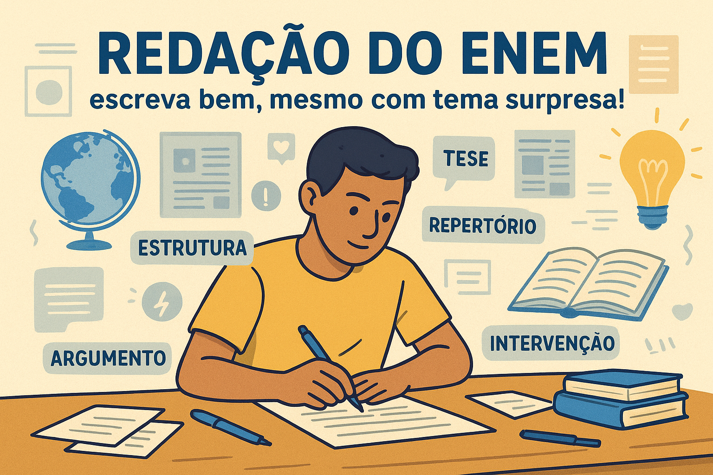

Dicas para Fazer a Redação do ENEM Mesmo se o Tema For Surpresa
A redação do ENEM costuma gerar ansiedade entre os candidatos, especialmente porque o
tema é sempre uma surpresa. No entanto, é possível se preparar para escrever bem mesmo quando
o assunto foge de todas as expectativas.